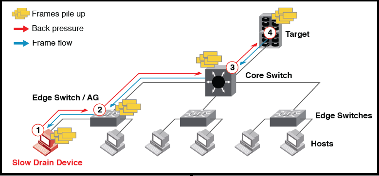

The following figure illustrates how the slow-draining device functions. In the figure, the inability of the slow-draining device (1) to clear frames quickly enough is causing backpressure not just to the edge switch or AG device (2), but also to the core switch (3) and the target (4) that is trying to send data to the slow-draining device.

To isolate the traffic destined to slow drain the device or port, the Slow-Drain Device Quarantine (SDDQ) feature of Fabric Performance Impact (FPI) quarantines the port. SDDQ moves all the traffic that is destined for the slow-drain devices to a low-priority VC and adds the port to the predefined ALL_QUARANTINED_PORTS MAPS logical group. The RASLog messages are displayed to notify that the traffic is successfully moved to a lower priority VC.
The following example displays the RASLog messages for SDDQ:
[NS-1026], 372, FID 128, INFO, G620, Local domain 1, port index 40: A zoned device 0x012800 has been quarantined.
[NS-1024], 373, FID 128, INFO, G620, Flow from device 0x012200 to quarantined device 0x012800 of Local domain 1 has been successfully quarantined.
[NS-1024], 374, FID 128, INFO, G620, Flow from device 0x012300 to quarantined device 0x012800 of Local domain 1 has been successfully quarantined.
[MAPS-1022], 375, FID 128 | PORT 0/40, WARNING, G620, Port 40 (Port index 40) has been marked as Slow Drain Device.
[AG-1086], 513, FID 128 | PORT 0/8, INFO, G610, Slow drain device 0x011205 connected to F-port (8) have been quarantined.
[AG-1087], 528, FID 128 | PORT 0/8, INFO, G610, Slow drain device 0x011205 connected to F-port (8) have been unquarantined.
For more information about RASLog messages, refer to the Brocade Fabric OS Message Reference Guide.
Once MAPS quarantines a port, it continues to monitor the slow-drain port and if the condition gets cleared, then MAPS automatically performs the unquarantine action (if configured). The user can also manually unquarantine the port. See Manually Clearing Quarantined Ports or Automatically Clearing Quarantined Ports for more details about this procedure.